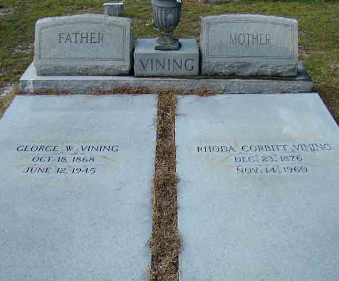
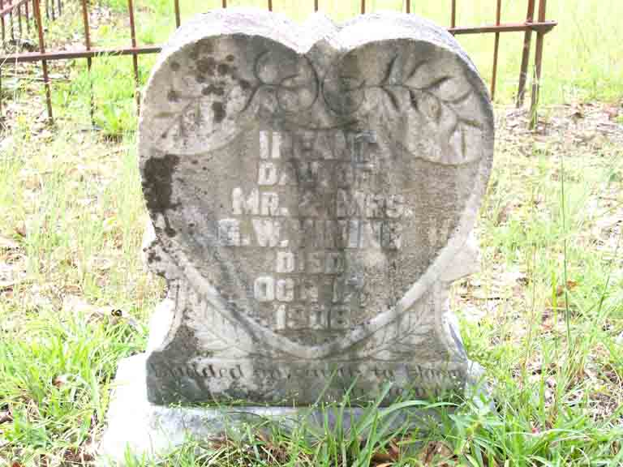
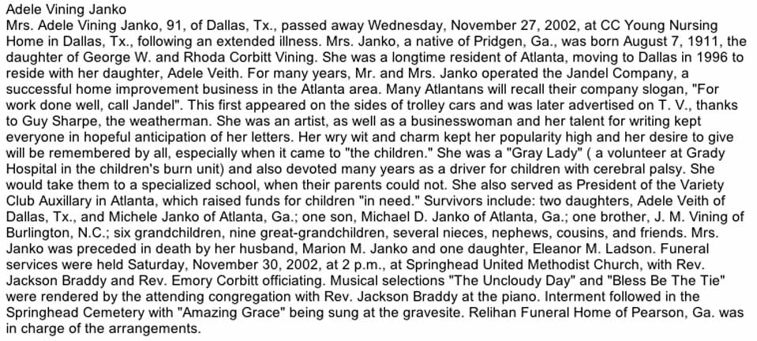
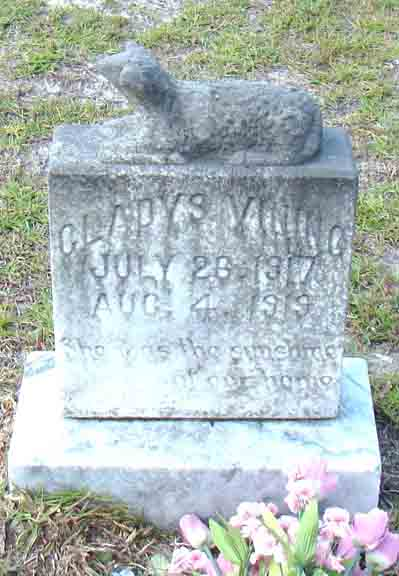

Documentation for George Wiley Vining and Rhoda Corbitt
Death Data
Gravestones for George Wiley Vining and Rhoda (Corbitt) Vining, in Springhead Methodist Church Cemetery, Willacoochee, Atkinson County, Georgia (from Find A Grave):

Gravestone for infant daughter of George Wiley Vining and Rhoda (Corbitt) Vining, in Oak Grove Methodist Church Cemetery, Coffee County, Georgia (from Find A Grave):

Obituary for Adele (Vining) Janko, daughter of George Wiley Vining and Rhoda (Corbitt) Vining:

Gravestone for Gladys Vining, daughter of George Wiley Vining and Rhoda (Corbitt) Vining, in Springhead Methodist Church Cemetery, Willacoochee, Atkinson County, Georgia (from Find A Grave):
